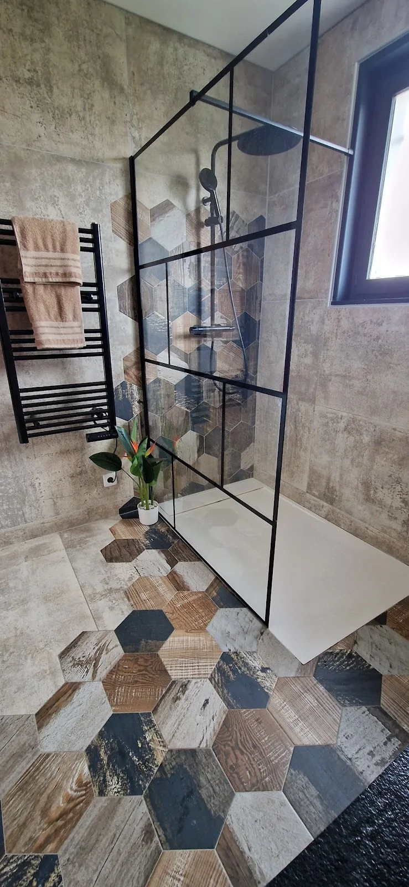
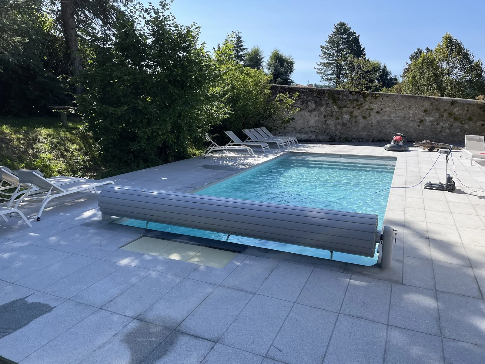
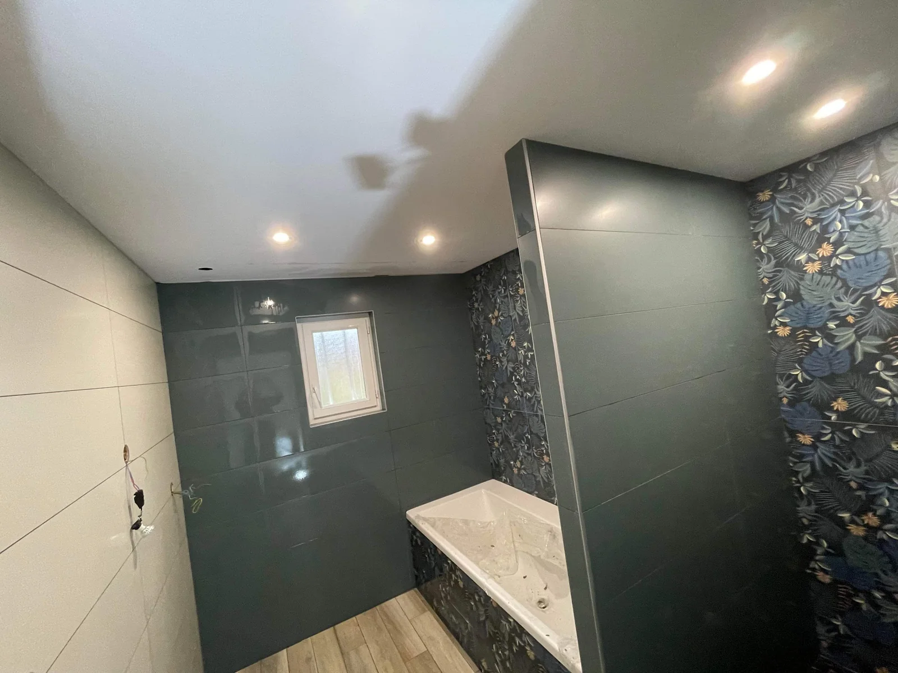
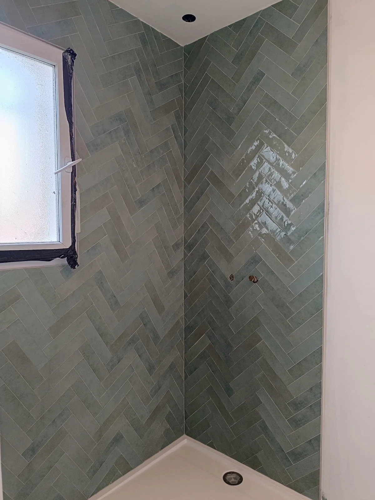
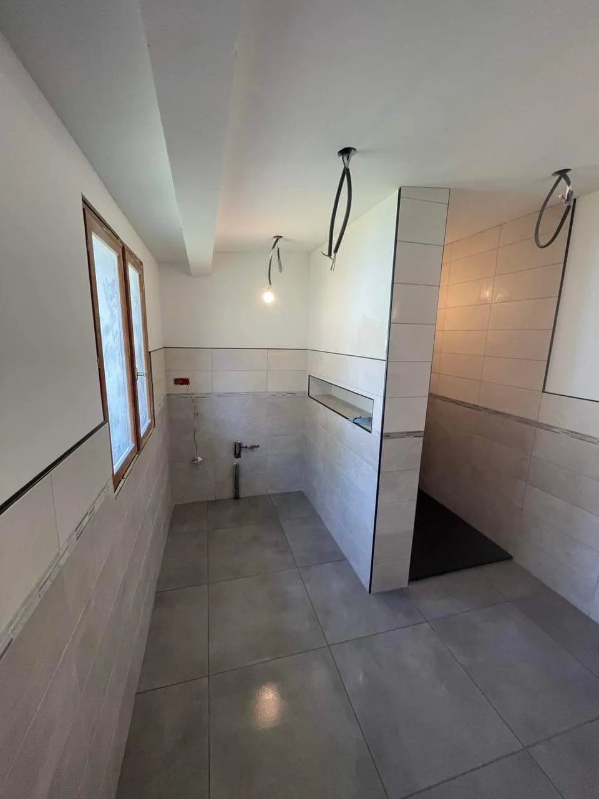
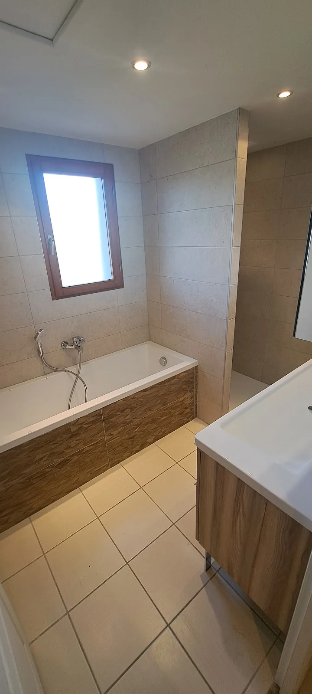
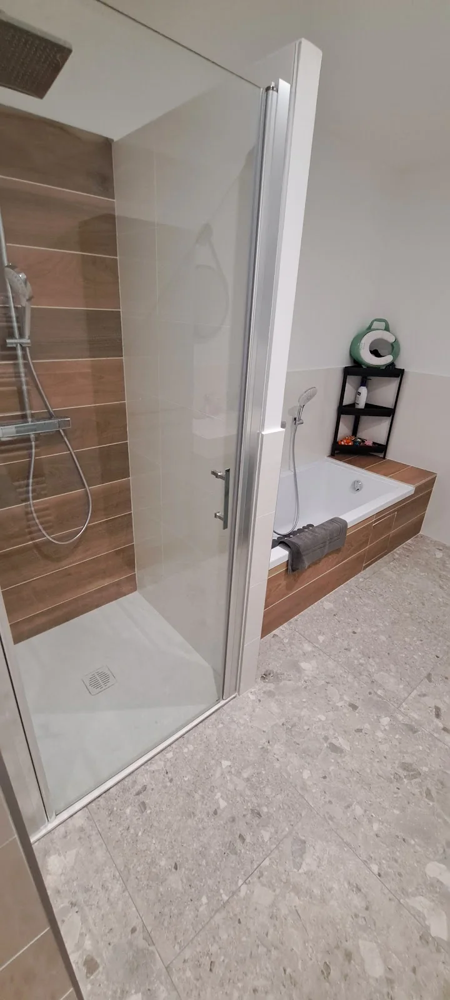
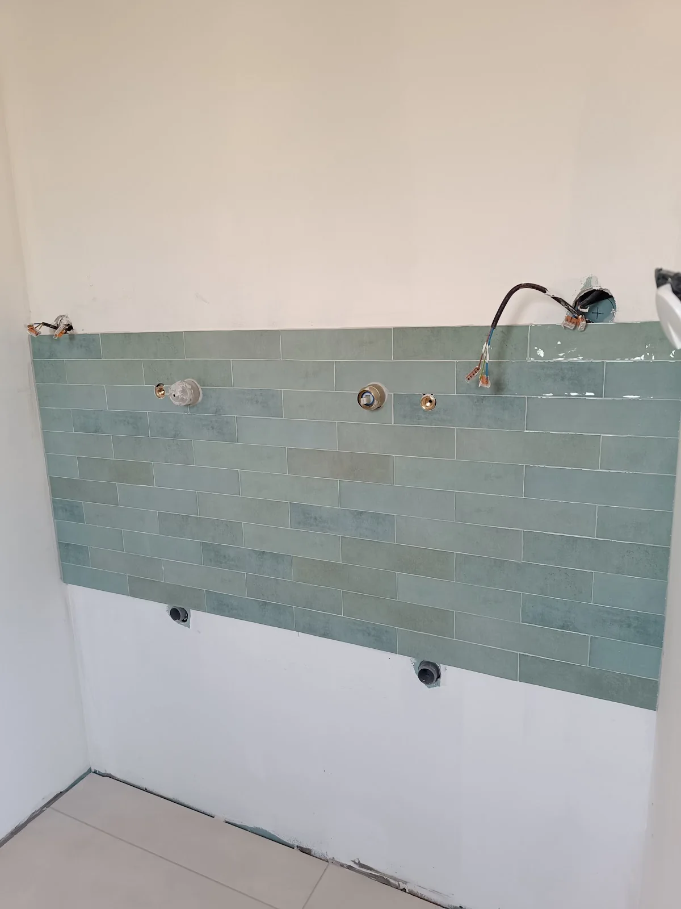

01
Chape & préparation des sols
Une base régulière permet d’aborder la pose dans de bonnes conditions et de viser un résultat propre sur toute la surface.
Parler de votre projet ↗Chape, carrelage et finitions soignées pour donner à chaque surface une base nette, durable et élégante.
La préparation, l’alignement, les coupes et les finitions déterminent le rendu final. Les réalisations présentées ici montrent une attention particulière portée à ces détails, de la base du sol jusqu’aux pièces d’eau.
Une base régulière permet d’aborder la pose dans de bonnes conditions et de viser un résultat propre sur toute la surface.
Parler de votre projet ↗Pose droite, compositions décoratives, murs et sols : le soin des lignes et des raccords structure visuellement toute la pièce.

Des finitions précises autour des équipements, niches, baignoires et douches pour obtenir un ensemble cohérent et facile à vivre.

Les réalisations disponibles comprennent également des espaces extérieurs carrelés, avec le même souci de netteté dans les alignements.

Les avis disponibles reviennent sur les mêmes qualités : sérieux, écoute, minutie, propreté du chantier et respect des engagements annoncés. C’est cette exigence visible qui inspire confiance avant même de parler du projet.
Un aperçu de chantiers et de finitions réalisés : pièces d’eau, détails de pose, sols et extérieur.





Quelques repères utiles à partir des informations disponibles. Pour les détails propres à votre chantier, le plus simple reste un échange direct.
06 46 40 36 41 ↗Les photos disponibles montrent notamment la préparation de sols, des poses de carrelage et de faïence, plusieurs salles de bain ainsi qu’un aménagement extérieur carrelé autour d’une piscine.
Vous pouvez contacter directement FR Chape & Carrelage par téléphone au 06 46 40 36 41. Cela permet de présenter votre besoin et de vérifier les modalités adaptées à votre chantier.
L’adresse indiquée sur la fiche Google Business est le 16 Rue Nouvelle, 42340 Veauche. Un bouton d’itinéraire est disponible plus bas sur cette page.
Les horaires indiqués sont de 08:00 à 18:00 du lundi au vendredi, puis de 09:00 à 12:00 le samedi. L’établissement est indiqué comme fermé le dimanche.
Les cinq avis textuels disponibles mettent notamment en avant la qualité du travail, la minutie, l’écoute, les conseils, la propreté du chantier ainsi que le respect des délais annoncés.
Oui. La galerie ci-dessus reprend les photos disponibles sur la fiche de l’établissement afin de montrer différents styles de pose et types de pièces.
FR Chape & Carrelage est basé à Veauche. Pour une question ou un projet, appelez directement l’entreprise pendant les horaires indiqués.
06 46 40 36 41 Obtenir l’itinéraire ↗